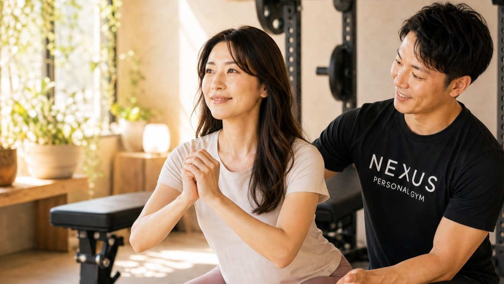

NEXUS Personal Gym ／ 神奈川県横浜市南区
NEXUSパーソナルジム 弘明寺店｜40代の生活習慣ごと立て直す完全個室ジム

横浜市南区大岡、京急線・弘明寺駅と横浜市営地下鉄ブルーライン・弘明寺駅の2駅から徒歩3分の完全個室パーソナルジムです。弘明寺店が得意とするのは、40代からの生活習慣の立て直し。体重や数値だけを追いかけるのではなく、運動・食事・姿勢をまとめて見直し、生活そのものをリセットしていきます。「40代になり生活習慣を見直したくて入会。無理のない内容で体力が戻り、生活にハリが出た」——そんな声のように、日々の暮らしまで変わっていく手応えを大切にしています。「他のジムでは何をすべきか分からず挫折した」という方も、弘明寺店なら毎回プロがあなたに合ったメニューを組むので安心。週2回・月8回のペースで数ヶ月続けるうちに、身体の変化が日常生活にも表れてきます。完全個室で担当トレーナーと二人だけだから、その日の体調に合わせて柔軟に調整でき、自宅でできることまで教われます。ウェア・タオル・ドリンク・プロテインまで全部込みのアメニティ完備で、手ぶら通いOK。毎日8:00〜23:00・LINE予約で、忙しい毎日にも無理なく続けられます。
- ブライダル対応
- 完全個室
- 2駅から徒歩3分
- 上大岡から通える
- 40代の生活習慣立て直し
- ★4.9（19件）
- 毎日8:00〜23:00
この店舗の特徴
NEXUS弘明寺店は、横浜市南区大岡にある完全個室パーソナルジム。京急線・弘明寺駅と横浜市営地下鉄ブルーライン・弘明寺駅、2つの弘明寺駅から徒歩3分という、通いやすさが際立つ立地です。この店舗いちばんの個性は、40代からの生活習慣の立て直しを得意としていること。40代になると、若い頃と同じ生活を続けているだけで、体力の低下や体型の変化、疲れの抜けにくさを感じやすくなります。弘明寺店では、体重や数値の改善だけを目指すのではなく、運動・食事・姿勢をまとめて見直し、生活そのものをリセットするサポートをします。会員からは「40代になり生活習慣を見直したくて入会。無理のない内容で体力が戻り、生活にハリが出た」という声をいただいています。また、パーソナルジムが初めての方や、他のジムで「何をすればいいか分からず続かなかった」という方も、弘明寺店では毎回トレーナーがあなたに合ったメニューを組み立てるので、迷うことがありません。「初めてのパーソナルで楽しく通えている」という声も多くいただいています。完全個室のマンツーマンだから、その日の体調や気分に合わせて柔軟に調整できます。予約はLINEでサッと完結します。
運動・食事・姿勢を、まとめて見直す

40代になって「なんとなく体力が落ちた」「疲れが抜けにくい」「体型が変わってきた」と感じるとき、その原因は一つではありません。運動不足、食事の傾向、姿勢のクセ——いくつもの要素が積み重なって、今の身体をつくっています。だからこそ弘明寺店では、どれか一つだけを切り取るのではなく、運動・食事・姿勢をまとめて見直します。会員からは「40代になり生活習慣そのものを見直すために入会。無理のない内容で体力が戻り、生活にハリが出た」という声をいただいています。トレーニングで身体を動かす習慣をつくり、食事の傾向を整え、日常の姿勢を見直す。この三つが噛み合うことで、単発の努力では得られない、持続的な変化が生まれます。大切なのは「無理をしないこと」。急に生活のすべてを変えようとすると、続きません。弘明寺店では、あなたの今の暮らしを起点に、できるところから少しずつ整えていきます。トレーニングの成果を食事から後押ししたい方には、月額3,000円（税込）のAI食事指導もご用意。体力が戻り、日々の生活にハリが出る——数値の改善では味わえない、生活そのものの手応えを、弘明寺店で取り戻してください。
40代になり生活習慣を見直したくて入会しました。無理のない内容で体力が戻り、生活にハリが出たのを実感しています。始めて良かったです。
「メニューが分からない」を、なくす

ジムに通ったものの、「何をすればいいのか分からない」「このやり方で合っているのか不安」——そんな理由で続かなかった経験はありませんか。自己流のトレーニングや、フォームが不確かなままの運動は、効果が出にくいだけでなく、モチベーションも続きにくいものです。弘明寺店では、その「分からない」を根本からなくします。会員からは「他のジムではメニューが分からず続かなかったが、初めてのパーソナルで楽しく通えている」という声をいただいています。毎回のセッションで、トレーナーがあなたの目標や体調に合わせてメニューを組み立てるから、「今日は何をすればいいんだろう」と迷うことがありません。種目の選び方も、回数や重さの設定も、フォームの細かなポイントも、すべてプロがその場で導きます。だから、初めてパーソナルジムを利用する方でも、安心してトレーニングに集中できます。「考えなくていい」「任せられる」という安心感が、通うことを楽しくし、続ける力になります。一人で悩みながら続かなかった方こそ、弘明寺店のマンツーマン指導で、トレーニングの楽しさを取り戻してください。
他のジムではメニューが分からず続きませんでしたが、初めてのパーソナルで楽しく通えています。毎回プロが組んでくれるので迷いません。
週2回×月8回で、数ヶ月後の身体が変わる

身体は、一度のトレーニングでは変わりません。けれど、適切な頻度で続ければ、確実に応えてくれます。弘明寺店がおすすめするのは、週2回・月8回のペース。このリズムでトレーニングを積み重ねると、数ヶ月後には身体の変化がはっきりと表れてきます。会員からは「週2回・月8回で数ヶ月、フォームの要点を毎回教わり、身体の変化が日常生活にも表れてきた」という声をいただいています。大切なのは、ただ回数をこなすことではなく、一回一回のフォームの質を高めること。トレーナーが毎回フォームの要点を確認しながら進めるので、同じ種目でも効き方が変わり、成果につながります。そして、身体の変化は鏡のなかだけの話ではありません。階段がラクになった、疲れにくくなった、姿勢が良くなった——こうした変化が日常生活のあちこちに表れることで、「続けてよかった」という実感が深まります。週2回という頻度は、忙しい毎日のなかでも現実的に続けられるペース。完全個室でその日の体調に合わせて調整できるから、無理なく積み重ねられます。数ヶ月後の自分のために、今日から一歩を踏み出してみませんか。
週2回・月8回で数ヶ月続けています。フォームの要点を毎回教わるおかげで、身体の変化が日常生活にも表れてきました。通うのが習慣になりました。
京急でも地下鉄でも、駅3分
NEXUS弘明寺店は、横浜市南区大岡2-3-2 弘明寺センタービル3Fにあります。最大の魅力は、京急線・弘明寺駅と横浜市営地下鉄ブルーライン・弘明寺駅という2つの弘明寺駅から、どちらも徒歩3分という通いやすさ。2路線が使えるので、その日の予定や気分に合わせてルートを選べます。京急線・地下鉄ブルーラインともに上大岡駅の隣駅にあたるため、上大岡エリアにお住まいの方、お勤めの方にも便利にご利用いただけます。弘明寺は、横浜最古の寺・弘明寺観音の門前町として知られる、歴史と生活感の調和した街。商店街のにぎわいと落ち着いた住環境が共存し、日々の暮らしのなかに無理なくトレーニングを組み込めます。営業時間は毎日8:00〜23:00なので、朝の時間でも、仕事帰りの夜でも通えます。ウェア・水・タオル・プロテインまですべてアメニティとしてご用意しているので、持ち物は通勤バッグひとつ、手ぶらのまま通えます。予約・変更はLINEで完結し、6時間前まで無料でキャンセルできるので、急な予定変更にも対応しやすい設計です。弘明寺・上大岡で「生活習慣ごと立て直せる完全個室ジム」をお探しの方は、ぜひ一度お越しください。
まずは無料体験から

「40代になって体力の低下を感じる」「生活習慣を全体的に見直したい」「他のジムでは続かなかった」——そんな方こそ、まずは無料体験からお試しください。弘明寺店の無料体験は、カウンセリングであなたの日々の過ごし方や食事の傾向、これまでの運動経験、身体のお悩みをじっくり伺うところから始まります。その上で、姿勢や身体のクセをチェックし、実際にトレーニングを体験。あなたに合った種目を、フォームを丁寧に確認しながら進めるので、運動が久しぶりの方でも安心です。会員からは「初めてのパーソナルで楽しく通えている」という声をいただいています。体験も手ぶらでOK。ウェア・タオル・ドリンクもすべてご用意しているので、仕事や予定の合間に、そのままお立ち寄りいただけます。京急線・地下鉄ブルーラインの2つの弘明寺駅から徒歩3分、上大岡からもアクセスできるので、通いやすさも安心です。無理な勧誘は一切ありません。まずは弘明寺店で、生活習慣ごと立て直す第一歩を、気軽に踏み出してみてください。
Price料金プラン
入会金は通常55,000円、無料体験当日入会で15,000円（税込）に割引。AI食事指導は月額3,000円（税込）。全店舗共通の料金です。
Reviewsお客様の声
出典：Google マップ
NEXUS弘明寺店はGoogle口コミ★4.9・19件。40代からの生活習慣の立て直しと、2駅から徒歩3分の通いやすさが評価されています。「無理のない内容で体力が戻り、生活にハリが出た」「他のジムでは続かなかったが、初めてのパーソナルで楽しく通えている」「週2回・月8回で数ヶ月、身体の変化が日常生活にも表れてきた」という声が多く、生活そのものを整えたい方に支持されています。
パーソナルジムは初めてでしたが、毎回メニューを組んでもらえるので迷わず、楽しく通えています。40代の身体づくりの相談にも丁寧に乗ってくれます。
Bridal結婚式前のボディメイクにも対応
弘明寺店では、挙式日から逆算した結婚式前のボディメイクにも対応しています。背中・二の腕・デコルテ・ウエストなど、ドレスで視線が集まる部位を完全個室のマンツーマンで整えます。挙式日から逆算した90日・60日プランで、式当日にピークを合わせます。
挙式日からの逆算タイムライン｜ブライダル専用ページを見るこの店舗のブライダル対応をくわしく

「ドレスの試着で二の腕が気になった」「背中の開いたデザインを、体型を理由に諦めたくない」——挙式という動かせない期日があるからこそ、ボディメイクは最後までやり切れます。弘明寺店では、まず挙式日とドレスのデザインをうかがい、背中・二の腕・デコルテ・ウエストという、ドレスでもっとも視線が集まる部位から優先順位をつけていきます。完全個室のマンツーマンだから、人目を気にせず自分の身体とだけ向き合えます。

残された日数によって、やるべきことは変わります。弘明寺店では挙式日から逆算した90日プラン・60日プランを用意し、「いつまでに、どの部位を、どこまで」を最初に設計します。極端な食事制限で当日フラフラ……ということがないよう、その日のコンディションから逆算する無理のない指導で、式当日にピークを合わせます。会員の約85%が女性で、ブライダルのご相談は日常的。体に不必要に触れないノータッチ指導を基本にしているので、はじめての方も安心です。

週を追うごとに、ドレスの試着で鏡に映る自分が変わっていきます。背中がすっと伸び、二の腕のたるみが引き締まり、デコルテに華やかさが出る。「このデザインで大丈夫かな」から「このドレスを選んでよかった」へ——目標が数字ではなく“当日の自分の姿”だからこそ、モチベーションが途切れません。弘明寺エリアで挙式を予定されている方は、エリア内の式場への下見や打ち合わせの動線に、そのままトレーニングを組み込めます。

迎えた挙式当日。積み重ねた90日・60日は、鏡の前の安心感になって返ってきます。姿勢よく背筋を伸ばして立ち、写真のどの角度でも堂々といられる——それは、頑張ってきた自分だけが手にできる自信です。弘明寺店は、その一日のために全力で伴走します。

挙式は、新しい生活のスタートでもあります。せっかく作り上げた身体を、そのまま新生活の習慣に。弘明寺店は毎日8:00〜23:00営業・月4回18,000円（1回4,500円〜）から続けられるので、挙式後の体型維持から、将来の産後の体型戻しまで長く伴走できます。全国約70店舗のネットワークがあるため、引っ越しや里帰りの際も最寄り店舗へ。「一生に一度」のために始めた習慣が、その後の人生を支える土台になります。
挙式まで残り80日で駆け込みました。背中の開いたドレスに合わせて、二の腕と背中を中心にプランを組んでもらい、当日は自信を持って写真に写れました。式後もそのまま通っています。
上記はサービス内容をわかりやすく伝えるためのモデルケース（イメージ）であり、実在するお客様の口コミではありません。Google口コミは本ページ内の該当セクションに実際の内容を要約して掲載しています。
挙式日からの逆算タイムライン｜ブライダル専用ページを見るアクセス
- 店舗名
- NEXUSパーソナルジム 弘明寺店
- 住所
- 〒232-0061
神奈川県横浜市南区大岡2-3-2 弘明寺センタービル3F - 最寄り駅
- 京急線 弘明寺駅／横浜市営地下鉄ブルーライン 弘明寺駅（いずれも徒歩3分・上大岡からもアクセス可）
- 営業時間
- 毎日 8:00〜23:00
- 電話番号
- 050-1790-8486
弘明寺店のよくある質問
Q弘明寺駅の近くにパーソナルジムはありますか？+
Q生活習慣を全体的に見直したいのですが相談できますか？+
Q上大岡からも通えますか？+
Q挙式まで3ヶ月ですが、結婚式に間に合いますか？+
Qドレスで気になる背中や二の腕を集中的に絞れますか？+
Q結婚式が終わった後も通い続けられますか？+
よくある質問（全店共通）
料金・制度などNEXUS全店に共通するご質問です。さらに詳しくは110問のFAQをご覧ください。
Q料金はいくらですか？+
Q手ぶらで通えますか？+
Qキャンセルはいつまでできますか？+
Q食事指導はありますか？+
Qトレーナーはどんな人ですか？+
Q女性会員は多いですか？+
Q体験の流れは？+
NEXUSパーソナルジムの特徴・料金をもっと見る